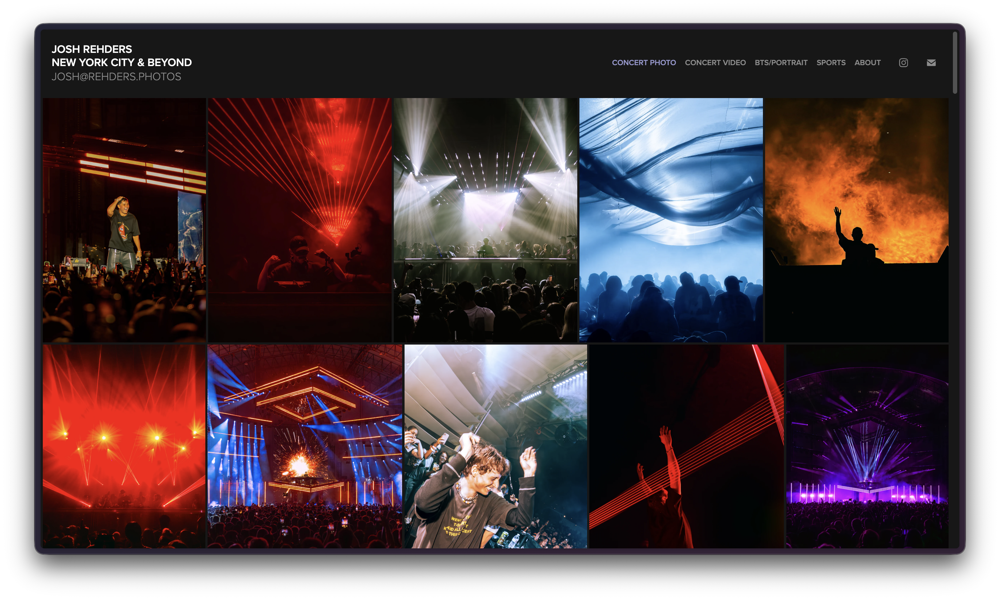
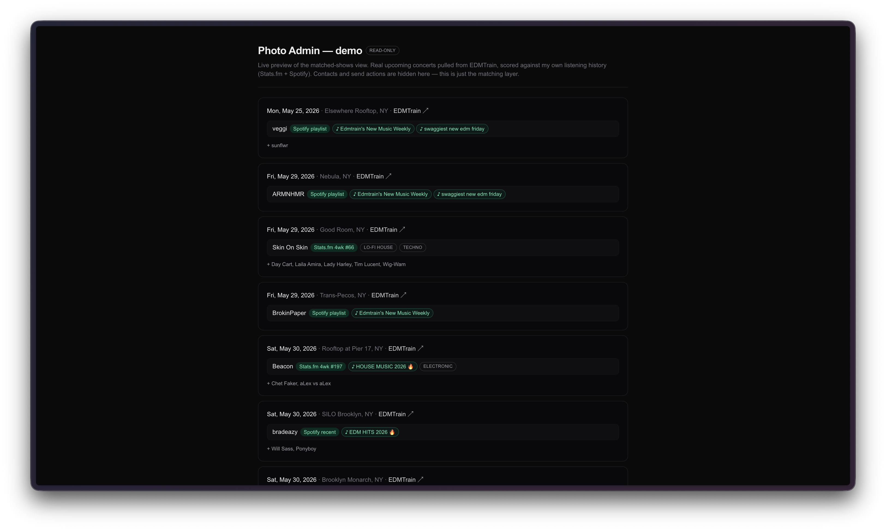
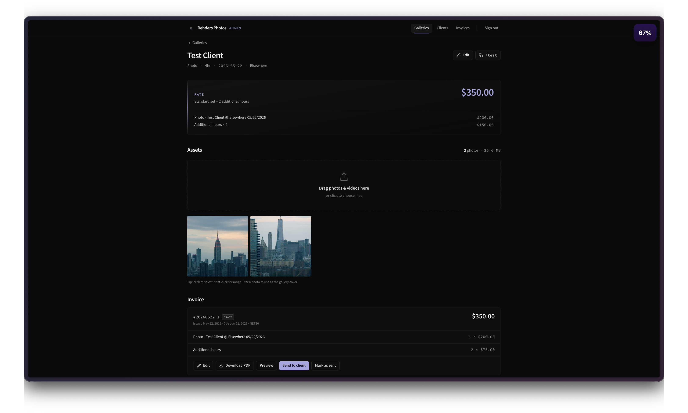
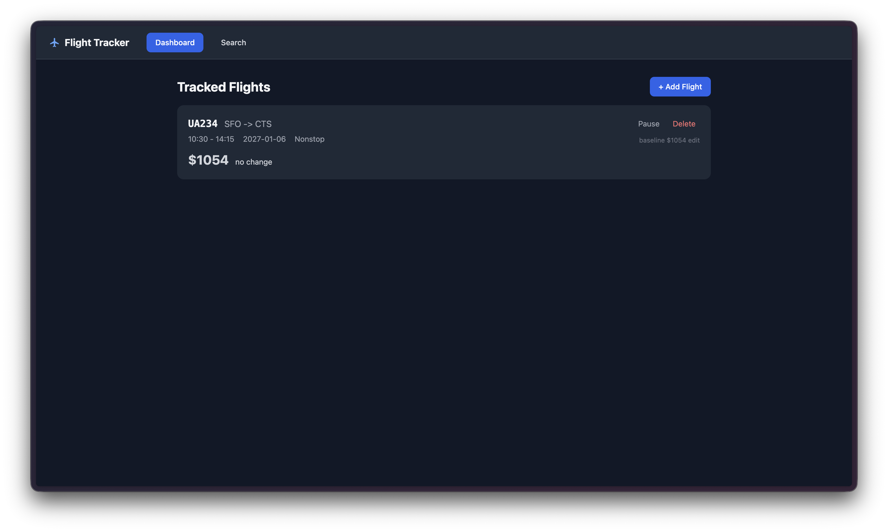
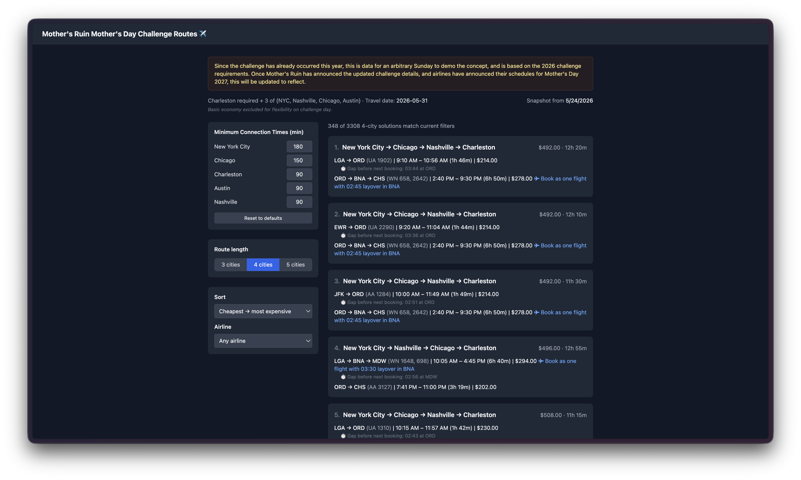
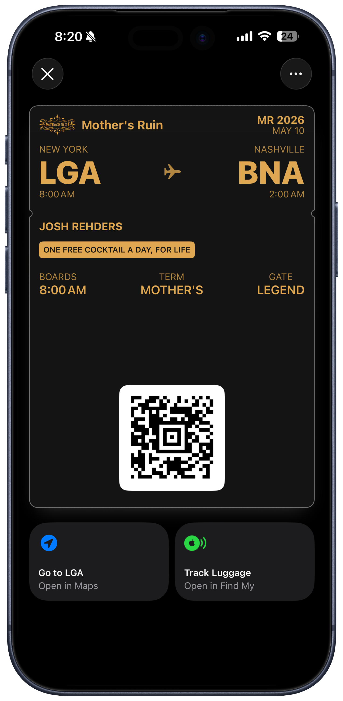
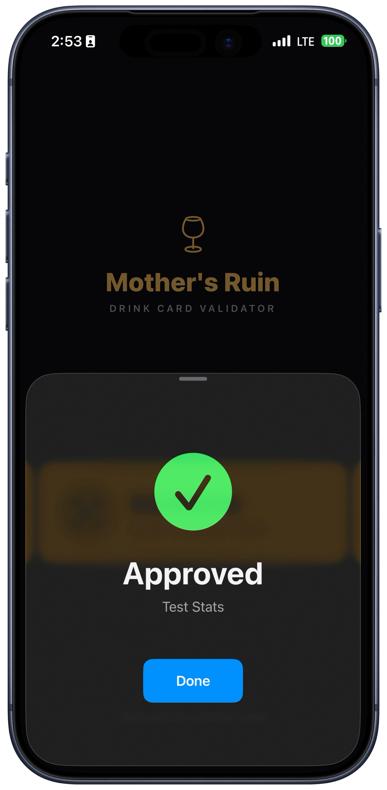
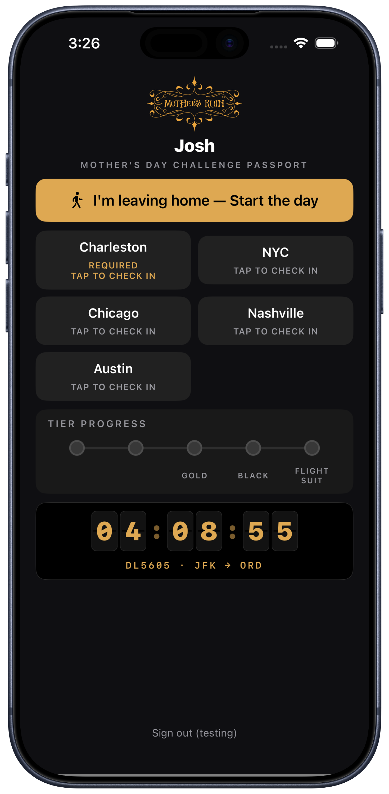

my name is josh rehders.
I graduated from
vanderbilt university,
where I earned a bachelor's degree in computer science as well as minors in engineering management and data science.
I work full-time on the microsoft loop and m365 copilot notebook/pages iOS team, building AI products to further productivity and collaboration in enterprise settings.
I also work as a freelance multimedia creative, specializing in concerts and sports, and work to showcase people's passion through my storytelling.
side programming projects
I have worked on a few side projects over the past few months to smooth the day-to-day aspects of some of my favorite activities:
on the photography side, I built my portfolio site on top of a cloudinary CDN so that portfolio galleries are authored just by uploading to folders, an admin panel that pulls upcoming shows from EDMTrain, compares them against my spotify + stats.fm listening to flag shows I'd be interested in, and allows me to send templated outreach to artist contacts, and a client gallery + invoicing tool with browser-direct uploads to R2 and rate-card-driven invoice PDFs sent via resend.



on the travel side, I built a flight tracker with route search, pinned-flight price watches that fire a firebase push when the price moves, and an explorer to solve the logistics of mother's ruin's mother's day challenge.


for that same challenge, I also built out a stack of three apps: a node/fastify backend that issues apple + google wallet passes for drink entitlements, a bartender website and offline-capable iOS app that validates said passes via QR scan at the bar. I also built a customer iOS passport app for the bar-crawl side of the event with on-device geofencing to strengthen overall challenge security.



photography, videography, etc
more recently, my creative work is centering around electronic music shows, building the a cohesive visual presence for artists large and small within the genre.
I also have shot a plethora of sports, ranging from football to baseball, cross country to tennis and more.
the general goal of my work is to showcase the passion of the moment, whether that be in the arts, sports, or anywhere else.
therefore, sometimes I cover news too, and I interviewed the chancellor of vanderbilt as well, that was cool.
as a result of said news coverage, my photos have been used by TIME mag, NBC twice, the Associated Press and more.
also, I recently bought a(nother) drone (the first one crashed) and am incorporating it into my travel photography style, seen in various highlights on my instagram
various previous activities
at vanderbilt, I was the photography director of the vanderbilt hustler.
summer 2023 i worked on the pre-release version of loop, a new co-creation product in microsoft 365, helping to enable granular control over notification settings.
summer 2022 I worked on microsoft answers which has now been retired/merged to microsoft learn. prior to the retirement, I worked on refactoring & redesigning our most trafficked pages as we migrated to react.
in 2020, I co-founded swipes for a cause, and worked with vanderbilt student government on the campus life committee to further the program in an official context.
by way of working in the music industry, as well as a general love for concerts overall, I've managed to find my way to 70 concerts/festivals/shows (and counting). see more on my concert timeline here.
links
resume
github,
linkedin,
email
photos if you're looking for my photography
thanks for visiting, come back soon!